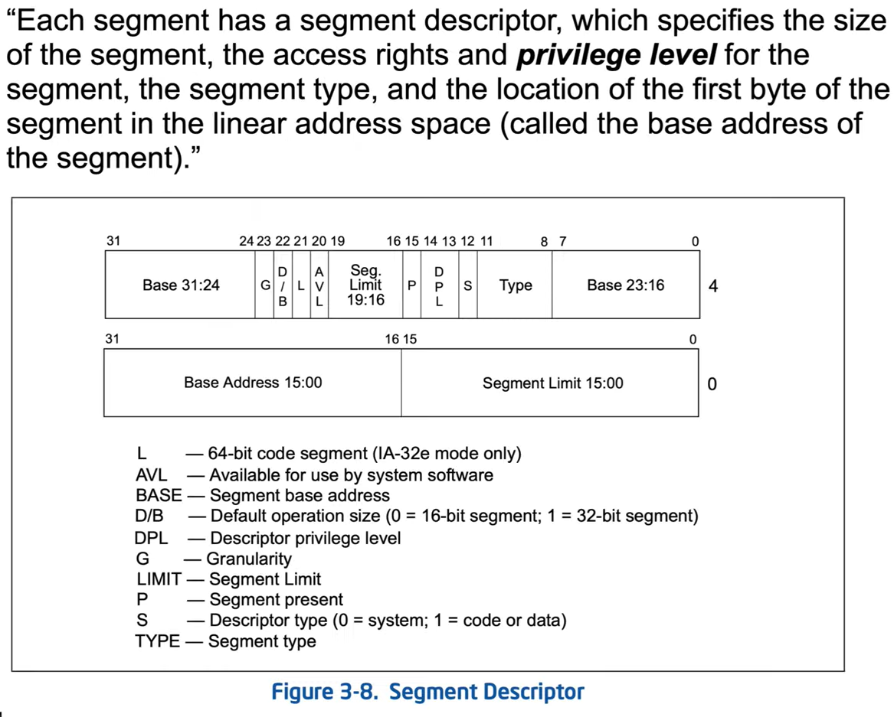

Segment Descriptor is a record in GDT or LDT, it is selected by the segment selector and catched into the hidden part of a segment register.


if L-bit is set (1) we are in 64-bit mode. otherwise 32.

- The Base address is stored in MSR's.


- Error will arise when trying to access a segment descriptor with 0 P flag.

0x


Conforming VS Non-Conforming- Conformingsegments allow lower privilege code to execute them.
- Ring 3 code could jump into ring 0 conforming segments and keep running
- The purpose of Conforming code is to allow movement from ring 3 to ring 2. but no one applies use of rings 1&2.
- Non-Conformingsegments will throw a general protection fault if lower privilege level tries to execute them.
Reminder of whats really happening with the ringy thingy:

***Note in Code segment - there is no E+W - essential for security - it is a metodology to only allow E^W for code segments. (execute xor write).

KGDTENRTY62 - Kernel GDT Entry 64
A struct used to view GDT records, in WinDbg:
dt -r (nt!_KGDTENTRY64)gdtr+(0x8*2) 2 being the index, can be replaced.


Bit-22 (D/B Flag) has different use's according to the descriptor type.
When the type of the segment descriptor is Code Segment- bit-22 stands for "D" (Default Opcode Size) flag.
- D flag is what actually controls whether an overloaded opcode is interpreted as dealing with 16 or 32 bit register / memory size.
- ***An"overloaded opcode"refers to a situation in which a single opcode or mnemonic can have different meanings or perform different operations depending on the context or operands involved. In other words, the same opcode can be used to represent multiple instructions with different functionalities.

The answer to how to interprete the 0x25 opcode is based on the code segment the code was found in.- if D flag == 0 its 16 bit default size
- if D flag == 1 its 32 bit default size
"The instruction prefix 66H (0x66) can be used to select an operand size other than default."
When the type of the segment descriptor is Stack segment- bit-22 stands for "B" (Big) flag
- Controls whether implicit stack pointer usage (e.g. push/pop/call) moves stack pointer by 16 bits (if B==0) or 32 bits (if B==1) at a time.
When the type of the segment descriptor is Expand-Down Data segment
*not actually in use- bit-22 stands for "B" (Bounds) flag
if B==0 upper bound of 0xFFFF, if B==1 upper bound of 0xFFFFFFFF.


The System descriptor is 16-bytes long.
it is extended to be able to contain a 64-bit address (regular segement descriptor can contain 32bit address, and FS & GS base address is stored in MSR's).